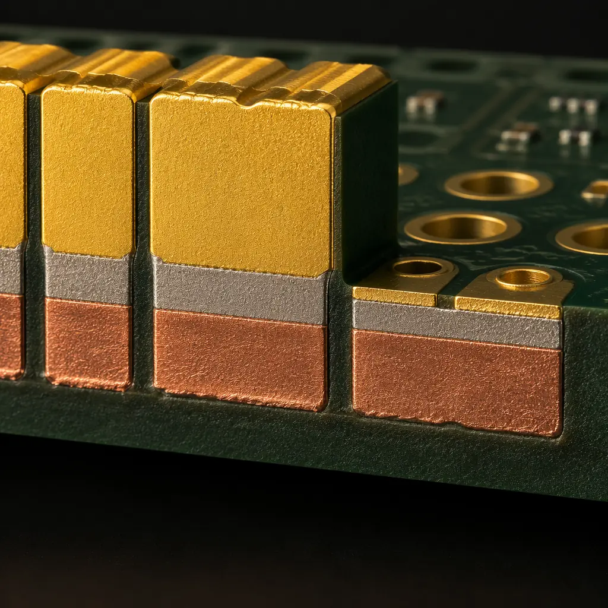
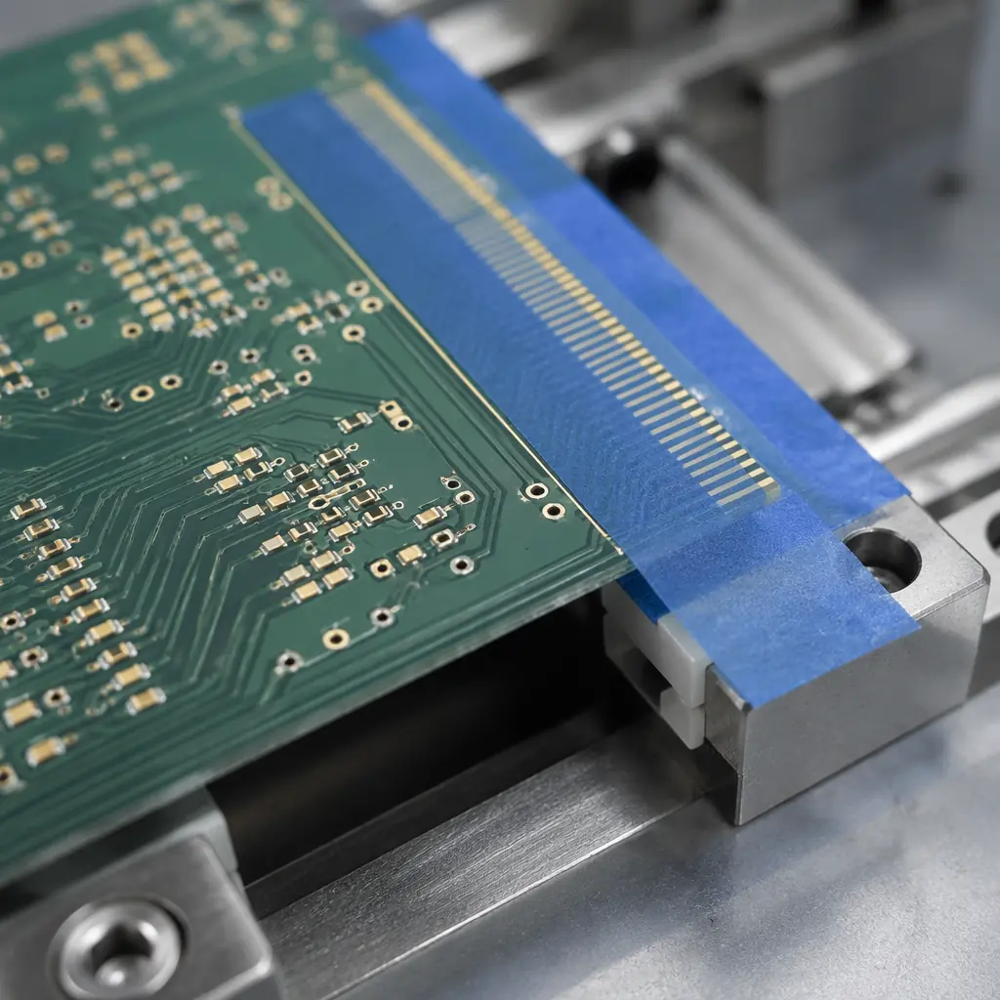
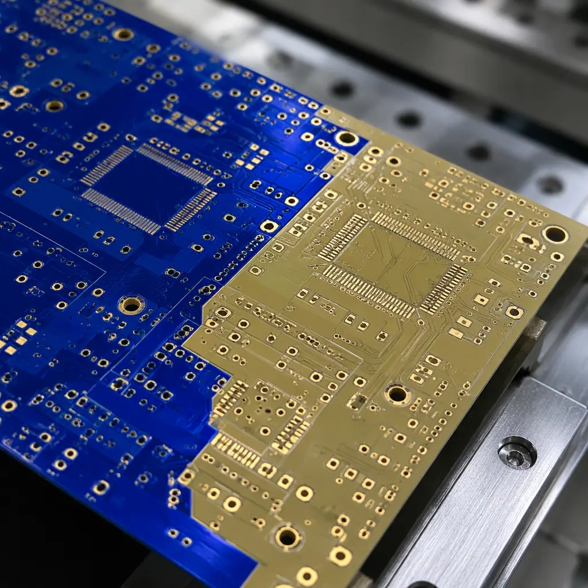
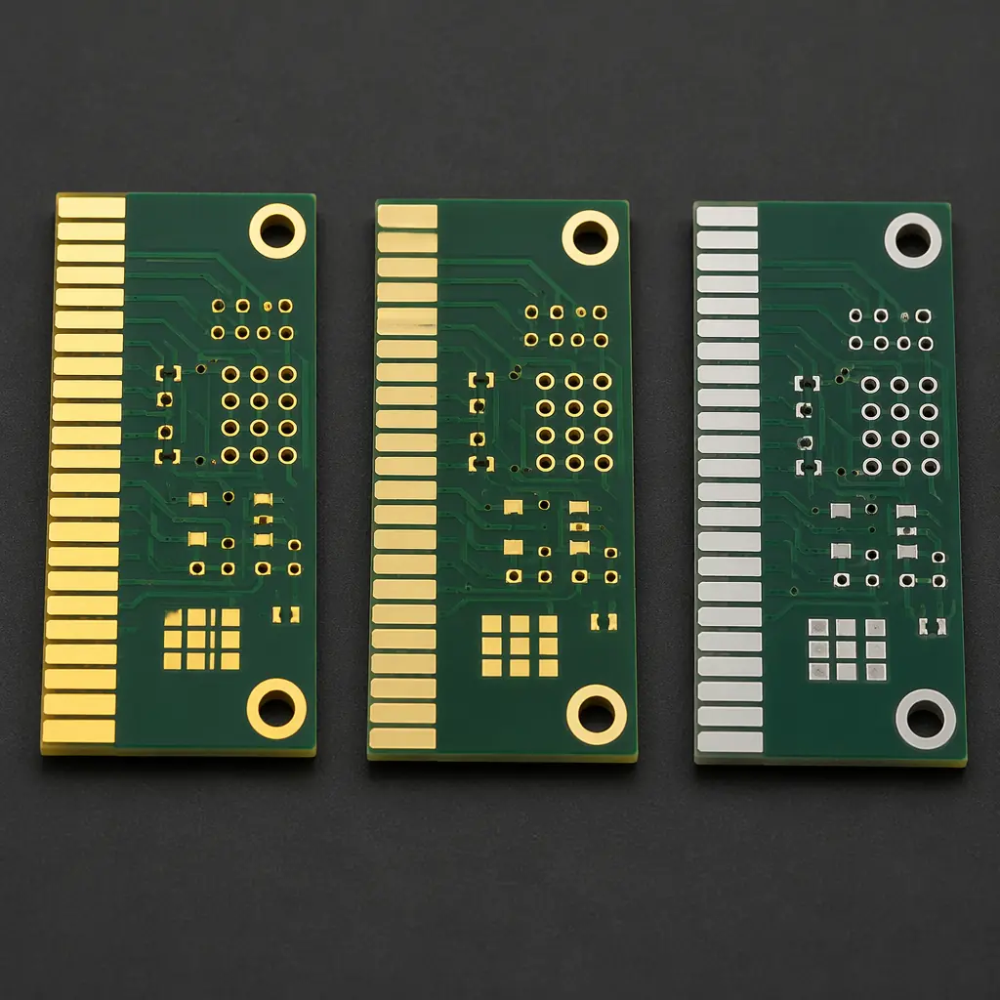

Every PCB that combines edge connector fingers with surface-mount components faces the same engineering tension: the connector needs hard electrolytic gold — 0.75 to 2.5 μm thick with cobalt or nickel hardeners — to survive hundreds of insertion cycles without wearing through to the nickel underlayer. But the SMT pads on the same board need a solderable finish like ENIG, OSP, or immersion silver. Put hard gold on solder pads and you get gold embrittlement in your solder joints. Put ENIG on edge connectors and the 0.05 μm of soft immersion gold disappears after 20–30 mating cycles.
Selective plating solves this contradiction — but it is not a free lunch. It adds process steps, introduces bus bar routing constraints, and can increase per-panel cost by $30–80. This guide covers every practical combination — ENIG + hard gold, OSP + ENIG, immersion silver + hard gold — with the design rules, cost trade-offs, and procurement specifications you need before sending your fabrication drawing to the board shop.

Why One Finish Is Not Enough — The Hard Gold vs ENIG Problem
The core conflict is straightforward: hard gold is terrible for soldering, and ENIG is terrible for connectors. Here is why, with the numbers that matter for your design review.
Hard electrolytic gold — deposited from an acid gold bath with cobalt or nickel co-deposits at 0.2–0.3% by weight — achieves a Knoop hardness of 130–200 HK. This hardness, combined with a thickness of 0.75 to 2.5 μm, is what lets PCIe edge connectors survive 50 to 500+ insertion cycles. But those same co-deposited metals — cobalt in particular — form brittle Au-Sn intermetallics during soldering. Above roughly 3% gold by weight in the solder joint, AuSn4 platelets nucleate and the joint's shear strength drops by 40–60%. This is gold embrittlement, and it is the reason every IPC-4552-compliant fabrication drawing explicitly forbids hard gold on solderable pads.
ENIG, by contrast, deposits pure immersion gold — no hardeners — at just 0.05 to 0.12 μm. It solders beautifully, with the gold dissolving completely into the solder within 3–5 seconds at reflow temperature, leaving a clean Ni3Sn4 intermetallic. But 0.05 μm of pure gold is mechanically soft and thin — edge connectors plated only with ENIG wear through to the nickel after 20–30 cycles, at which point contact resistance rises above the 30 mΩ threshold that PCI-SIG and JEDEC standards require. Our gold plating guide covers the full metallurgical comparison in detail.
Design Rule: If your board has edge connectors with ≥50 mating cycle requirements AND surface-mount pads for assembly, you need selective plating. A single finish cannot satisfy both requirements simultaneously. The question is not whether to use selective plating — it is which combination and how to specify it correctly.
The Three Most Common Selective Plating Combinations
Not all finish combinations are equally practical. Some pairings — like ENIG + hard gold — are processed by every major board shop. Others — like HASL + hard gold — don't make engineering sense and are rarely attempted. Here are the three combinations that matter for production boards.
| Combination | Primary Application | Cost Premium vs Single Finish | Lead Time Impact | Complexity |
|---|---|---|---|---|
| ENIG + Hard Gold | Server backplanes, telecom line cards, test instrumentation with edge connectors + fine-pitch BGAs | +$35–55/panel | +1–2 days | Medium — two plating baths, one masking step |
| OSP + ENIG | Consumer/automotive boards with mixed connector types: OSP on SMT areas for lowest cost, ENIG on press-fit or test pads requiring flat surface | +$15–30/panel | +0.5–1 day | Low — ENIG first, then selective OSP application |
| Immersion Silver + Hard Gold | RF/microwave boards with edge-launch connectors: immersion silver for lowest insertion loss on RF traces, hard gold on mating connectors | +$40–70/panel | +2–3 days | High — silver tarnish control during hard gold plating requires careful sequencing |
Procurement Note: The cost premiums above assume production volumes of 200+ panels. For prototype quantities (1–5 panels), the fixed setup costs — masking tooling, bath preparation, and process qualification — dominate, and the per-panel adder can be 2–3× higher. Always negotiate selective plating pricing separately from your standard per-panel cost when quoting prototypes. See our PCB cost factors guide for how volume affects pricing.
ENIG + Hard Gold: The Workhorse Combination
This is the most common selective plating configuration — and for good reason. ENIG handles fine-pitch SMT with excellent planarity (±2 μm across the pad), while hard gold on the connector fingers provides the wear resistance that mating cycle specifications demand. The combination appears on everything from PCIe add-in cards to military avionics backplanes.

Process Sequence: Hard Gold First, Then ENIG
The standard sequence plates the electrolytic hard gold first — on the exposed copper connector fingers only, using a resist mask to protect the rest of the board. A bus bar network connects all fingers to the rectifier cathode during electroplating, then gets etched away after plating is complete. After hard gold plating and resist stripping, the ENIG process plates the entire board's remaining exposed copper. Because ENIG is electroless (no external current), it deposits only where copper is exposed — meaning the already-plated hard gold fingers are not affected. Our surface finish selection guide covers ENIG process parameters in depth.
Bus Bar Design — The Most Common Layout Mistake
Every electrolytic hard gold finger needs a conductive path to the plating rectifier. The bus bar — typically a 0.3–0.5mm wide trace running perpendicular to the fingers along the board edge — connects all fingers to a common rail. The critical design rule: the bus bar must extend to the entire board edge on the connector side, and all fingers must connect to it. After plating, the bus bar is removed by a secondary routing or V-score operation that trims 1.0–1.5mm from the board edge. If your board outline has non-rectangular connector edges or internal cutouts in the connector area, bus bar routing becomes significantly more complex — factor this into your mechanical design review.
Masking Precision and Keep-Out Zones
The resist mask that protects non-connector areas during hard gold electroplating must have a registration tolerance of at least ±0.1mm. Specify a 0.2mm minimum keep-out zone between the edge of any hard-gold-plated area and the nearest ENIG pad. Without this clearance, gold wicking during the electroplating bath can deposit stray gold on adjacent ENIG pads — creating the gold embrittlement risk you were trying to avoid. At Huaxing PCBA, our CAM engineers add this clearance zone automatically during fabrication review, but explicitly noting it on your fab drawing eliminates ambiguity.
Specifying the Right Hard Gold Type
For edge connectors, IPC-4552 defines three types: Type I (0.75 μm Au min, 2.5 μm Ni min) for 50–100 cycle commercial connectors, Type II (1.25 μm Au min, 5.0 μm Ni min) for 100–500 cycle industrial and telecom applications, and Type III (2.5 μm Au min, 5.0 μm Ni min) for military/aerospace connectors exceeding 500 cycles. The Type you select directly affects plating time and cost — Type III takes roughly 3× longer than Type I. Most commercial server and networking boards use Type I or Type II. Do not default to Type III unless your specification genuinely requires it. For quality verification methods, refer to our PCB testing methods guide.
OSP + ENIG: The Cost-Conscious Hybrid
When edge connectors aren't the driver but you still need two finishes, OSP + ENIG is the economical choice. The typical use case: a board where the bulk of SMT pads use OSP for lowest unit cost, but specific areas — press-fit connector holes, gold finger test points, or BGA pads below 0.5mm pitch — need the flat, oxidation-resistant surface of ENIG.
The process sequence reverses the ENIG + hard gold flow: ENIG is applied first to the entire board, then a mask covers the ENIG-plated areas, and the remaining exposed copper receives OSP coating. Because OSP is an organic film applied by simple immersion — no electroplating, no bus bars — the masking step is simpler and cheaper. The cost adder over a single-finish ENIG board is typically $15–30 per panel, and the additional lead time is half a day to one day.

OSP Shelf Life Becomes the Limiting Factor
OSP has a shelf life of 6 months under controlled storage (30°C, 60% RH max). The ENIG pads on the same board have 12 months. If your assembly schedule is gated by the OSP half, you have not gained the ENIG shelf life advantage. Factor this into procurement planning: boards with OSP + ENIG should be assembled within 6 months of fabrication, not 12. For production planning guidance, our surface finish selection guide includes a full shelf-life comparison table.
Masking Registration for OSP Application
OSP is applied as a water-based organic solution — it will coat any exposed copper, including copper that you intended to leave bare for subsequent ENIG plating. The mask must completely seal ENIG areas during OSP immersion. Most fabricators use a peelable temporary solder mask or a precisely aligned dry-film resist. The registration tolerance is the same ±0.1mm, but the consequence of a misalignment is different: OSP leaching onto ENIG pads creates a partial organic film that compromises solder wetting. At receiving inspection, OSP pads should appear uniformly copper-colored; any pad with a gold appearance that also shows a faint organic sheen should be flagged for solderability testing per J-STD-003.
Immersion Silver + Hard Gold: For RF Boards That Cannot Compromise
RF and microwave PCB designers face the toughest selective plating challenge. High-frequency traces — microstrip lines, coplanar waveguides, antenna feed networks — need a surface finish with the lowest possible insertion loss. Immersion silver delivers this: at 10 GHz, silver's surface roughness contribution to insertion loss is approximately 0.02–0.05 dB lower than ENIG on the same laminate, due to silver's higher conductivity and smoother deposition. But the board's edge-launch connectors or blind-mate RF contacts still need hard gold for wear resistance.
The process challenge is silver tarnish control. Immersion silver begins oxidizing immediately upon exposure to air — forming Ag2S within hours in a manufacturing environment. If the hard gold plating step (which involves acidic baths and rinsing) occurs after silver deposition, the silver surface can tarnish or micro-etch. Most fabricators therefore plate hard gold first, strip the resist, apply immersion silver, and then immediately package boards in sulfur-free barrier bags with desiccant. The total time from silver bath exit to sealed packaging should be under 4 hours. For IPC Class 3 compliance requirements related to surface finish verification, see our certifications and compliance guide.
Design Warning — Silver Migration Risk: Immersion silver finishes are susceptible to electrochemical migration (ECM) under high-humidity DC bias conditions. If your board has high-voltage traces (>48V) adjacent to silver-plated RF lines, specify a conformal coating over the silver areas. Without coating, silver dendrite growth can create leakage paths and eventual short circuits — a failure mode that is notoriously difficult to reproduce in bench testing but common in tropical deployment environments.

When Selective Plating Is Worth the Cost — Decision Framework
The engineering case for selective plating is clear. The procurement case depends on three questions:
Is there a single finish that could work with acceptable compromise?
ENEPIG — at roughly a 25% premium over ENIG — can serve as a universal finish for many mixed-requirement boards. It won't match hard gold's wear resistance (ENEPIG gold is still immersion, not electrolytic), but if your connector mating requirement is ≤50 cycles, ENEPIG alone may suffice and eliminate the selective plating adder entirely. Run the numbers: ENEPIG single finish at +25% cost vs ENIG + hard gold selective plating at +$35–55/panel. For volumes above 500 panels, the single-finish ENEPIG route often comes out cheaper and certainly simplifies procurement. See our ENIG vs HASL comparison for additional finish options.
What is the per-board cost of a connector field failure?
If your board goes into a $2,000 telecom line card where a failed edge connector means a truck roll and $5,000+ in service costs, the $35–55 selective plating adder is obviously justified. If your board is a $15 consumer product with a USB-C connector that gets plugged in 30 times over its lifetime, skip the hard gold entirely — ENIG with proper connector contact design is sufficient. The decision is not technical; it is economic. Our PCB cost factors guide provides a framework for this type of cost-of-quality analysis.
Does your fabricator have proven selective plating capability?
Selective plating requires specialized equipment — dedicated hard gold plating tanks with precise current density control, automated resist application systems with optical alignment, and post-plating bus bar removal stations. Not every PCB shop runs this process regularly. Ask for process capability data: what is their minimum keep-out zone between hard gold and ENIG areas? What is their first-pass yield on selective plating jobs? A fabricator that runs selective plating on <5% of their orders may have lower yields and longer lead times than one where it is a core capability. Request incoming quality inspection data per our IQC guide to establish baseline expectations.
Specifying Selective Plating on Your Fabrication Drawing
A clear fabrication drawing prevents the most common selective plating error: the fabricator plating the wrong finish on the wrong pads. Write your plating specification in three parts:
| Specification Element | Example Text | Why It Matters |
|---|---|---|
| Area 1 — Edge connectors | "Selective hard gold per IPC-4552 Type II: 1.25 μm Au min (99.7% Au, 0.2-0.3% Co) over 5.0 μm Ni min. Plated area: connector fingers only, per Detail A on fab drawing. Bus bar to board edge, removed post-plating." | Specifies gold purity, hardener percentage, and the exact mechanical area — eliminates ambiguity about which features get hard gold |
| Area 2 — SMT pads | "ENIG per IPC-4552A on all remaining exposed copper pads: 0.05-0.12 μm Au over 3-7 μm electroless Ni (7-9% phosphorus)." | Phosphorus content range is critical — outside 7-9% P, nickel becomes either too brittle or too soft |
| Transition zone | "0.3 mm minimum keep-out zone between hard gold edge and nearest ENIG pad. No gold wicking or bridging permitted across this zone. Verify under 20× magnification." | Eliminates gold embrittlement risk on SMT pads adjacent to connector fingers |
Procurement Specification Tip: Always include a detailed view (Detail A, Detail B) on your fabrication drawing that calls out the exact boundaries of each plating zone. A note that says "selective hard gold on edge connectors" without a mechanical detail leaves the fabricator guessing about where the hard gold stops and the ENIG starts — and the most expensive guess is the one that puts 1.25 μm of cobalt-hardened gold on your 0.4mm pitch BGA pads.
Incoming Inspection for Selectively Plated Boards
When you receive selectively plated PCBs, three measurements separate an acceptable lot from latent field failures:
XRF spot-check both finish zones — not just one
An X-ray fluorescence analyzer can measure gold thickness in 5 seconds per spot. Sample at least 5 hard gold fingers and 5 ENIG pads per panel. The hard gold reading must meet the minimum thickness specification; any reading below spec on even a single finger rejects the lot. For ENIG pads, verify gold is within the 0.05–0.12 μm range — gold above 0.15 μm indicates over-plating that can cause brittle joints, while gold below 0.03 μm indicates nickel diffusion that will compromise solderability. See our PCB testing methods guide for XRF best practices.
Verify the transition zone under magnification
At a minimum of 20× magnification, inspect the boundary between the hard gold connector area and the nearest ENIG pad. Look for three defects: gold wicking (stray hard gold reaching ENIG pads), resist bleed (ENIG bath chemicals creeping under the mask into the hard gold area, causing discoloration), and incomplete bus bar removal (copper remnants at the board edge that can short adjacent connector pins). Any of these defects on more than 5% of boards in the sample is grounds for lot rejection.
Solderability test on ENIG pads per J-STD-003
The ENIG pads on a selectively plated board go through additional processing steps (masking, exposure to hard gold plating chemistry, resist stripping) compared to single-finish ENIG boards. This extra handling introduces a risk of surface contamination that compromises solder wetting. A dip-and-look test per J-STD-003 — SAC305 solder at 255°C, 95% minimum wetting — should be performed on a sample from every lot. This is especially important for OSP + ENIG boards, where cross-contamination between the two organic coating processes is possible. Our IQC guide covers the full incoming inspection workflow.
Selective plating is one of those PCB manufacturing processes where the difference between a reliable field product and a latent failure is written in microns — specifically, the micron of gold that exists (or doesn't exist) between your edge connector and the solder joint it shouldn't touch. Specify it clearly, verify it at receiving inspection, and partner with a fabricator that runs this process as a core capability, not an occasional exception.